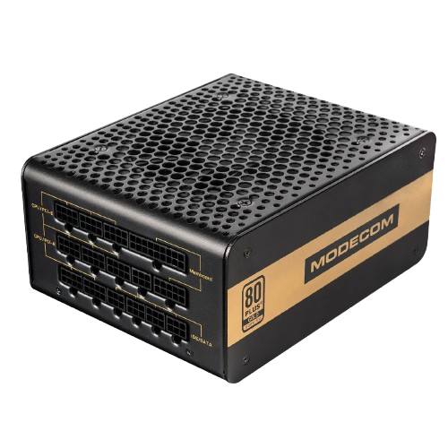

A power supply is an electrical device that converts electric current from a source into the correct voltage and frequency for an electronic device.
Zasilacz to urządzenie elektryczne, które przekształca prąd elektryczny ze źródła na napięcie i częstotliwość prawidłowe dla urządzenia elektronicznego.

| Nazwa |
Moc |
Cena |
Sklep |
| Volcano Gold 750W |
750W |
379 PLN |
Volcano |
| Konkuręcja |
| Asus Prime 750W Plus Gold |
750W |
499 PLN |
Asus |
| Corsair RM750x 750W |
750W |
739 PLN |
Corsair |
Interesting Facts About Power Supplies
- The first computer power supplies were linear power supplies.
- Modern PSUs use switching technology for better efficiency.
- 80 Plus certification rates the efficiency of computer power supplies.
- Some high-end PSUs are modular, allowing for custom cable management.
- PSUs convert AC power from wall outlets to DC power for computer components.
- A typical desktop PSU can output multiple voltages: 3.3V, 5V, and 12V.
- Some PSUs have built-in fans that adjust speed based on power load.
Ciekawostki o Zasilaczach
- Pierwsze zasilacze komputerowe były zasilaczami liniowymi.
- Nowoczesne zasilacze używają technologii przełączania dla lepszej wydajności.
- Certyfikacja 80 Plus ocenia efektywność zasilaczy komputerowych.
- Niektóre wysokiej klasy zasilacze są modularne, umożliwiając niestandardowe zarządzanie kablami.
- Zasilacze przekształcają prąd zmienny z gniazdek ściennych na prąd stały dla komponentów komputera.
- Typowy zasilacz stacjonarny może dostarczać wiele napięć: 3,3V, 5V i 12V.
- Niektóre zasilacze mają wbudowane wentylatory, które dostosowują prędkość do obciążenia.
More info: Strona cambridge
Wróć